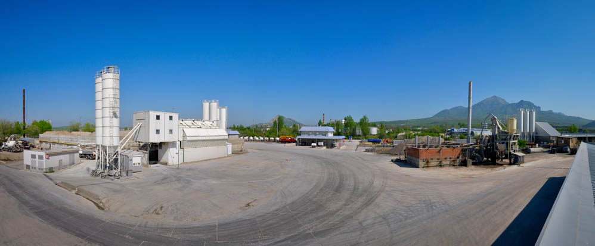

Асфальтобетонные смеси по ГОСТ 9128-2009 с собственным минеральным порошком. У нас не самый дешёвый асфальт в регионе — зато к нам возвращаются те, кому важно, сколько покрытие простоит.
Продукция участка
Выпускаем песчаную и мелкозернистую смеси марки II. Цену считаем под объём и адрес — асфальт отгружается горячим, поэтому график согласуем заранее.
| Вид смеси | Тип | Марка | Область применения | Цена за тонну |
|---|---|---|---|---|
| Песчаная | тип Г | марка II | Верхнее покрытие автодорог и городских улиц, проезжая часть мостов, дворовые проезды | По запросу |
| Мелкозернистая | тип Б | марка II | Нижнее покрытие автодорог и городских улиц, основания под верхний слой | По запросу |
На каждую партию поставки выдаётся паспорт качества установленного ГОСТом образца. Минеральный порошок МП-1 и МП-2 производим сами — на собственном карьере, что даёт стабильный состав смеси от партии к партии.
Честно о цене
Наши цены средние по рынку, и мы не заигрываем с покупателем скидками. Мы считаем, что нельзя делать дешёвый «бадяжный» асфальт: сэкономленное на смеси возвращается ямами через сезон.
Мы не лидеры по объёмам горячего асфальта в регионе и не стремимся ими быть. У нас есть постоянные заказчики, для которых важно именно качество и долговечность покрытия, — для них мы и работаем.
Завод отвечает в рабочий день
Или позвоните в отдел продаж: +7 928 821-72-11, пн–сб с 8:00 до 16:30.